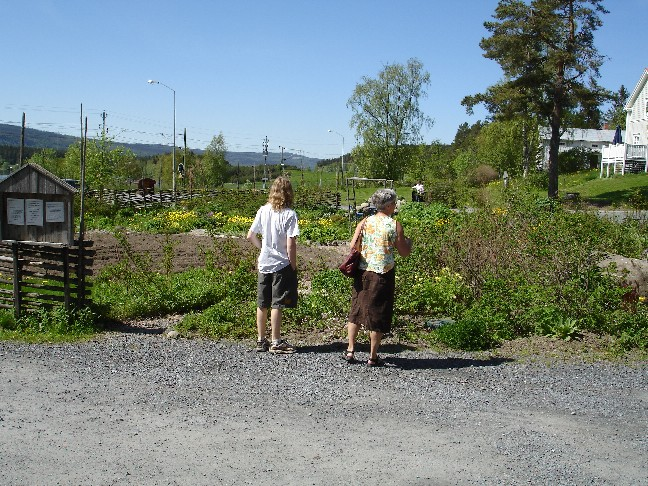
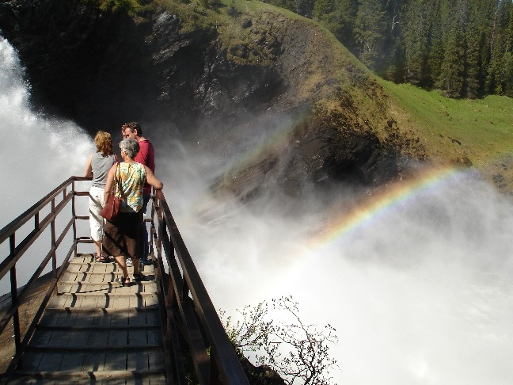
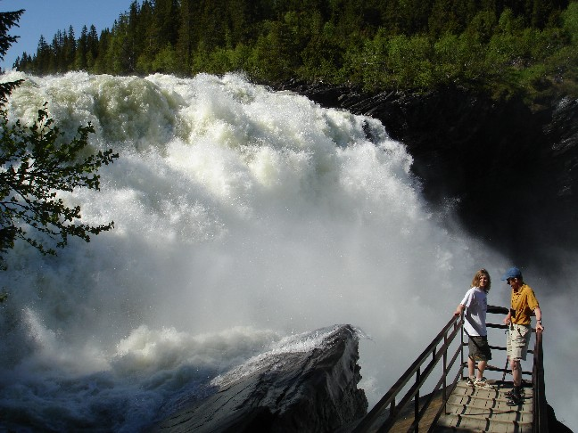
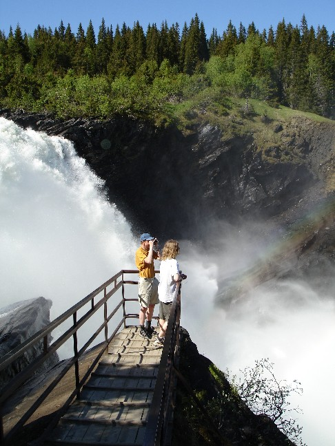

Tannforsen
Last saturday or sunday we went on a biltur, a car tour, up around the Åre area, between
Östersund and Norway.
First we stopped by the Kretsloppshuset for lunch, if you wish to translate that you get something
like "the circle period house" or "the circle extent house". It is an environmental
lunch restaurant and garden and environmental meeting place, to give ideas out. It is built
with all ecological material, local wood, etc. They have plenty of exotic plants inside,
from aloe to coffe plant, and even a chicken pen.
All the food there at the buffé was
vegetarian, with exception for the salmon. Good tasting swedish pea soup. See their home site
at www.kretsloppshuset.com .

We then went on to see Tännforsen, the biggest waterfall in Jämtland, maybe in SWeden.


